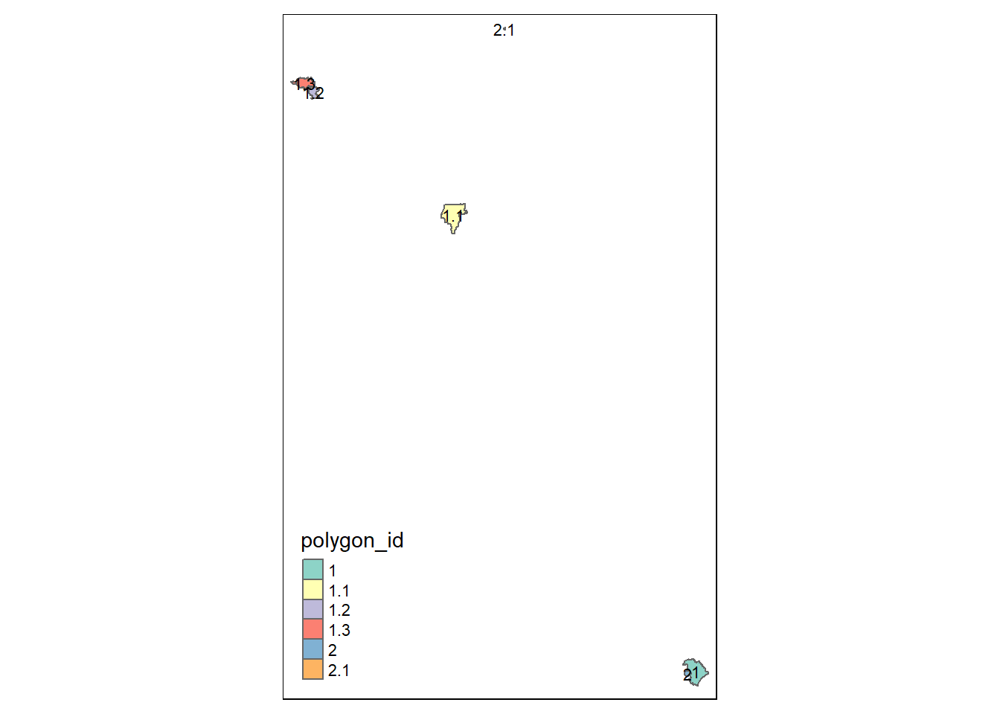
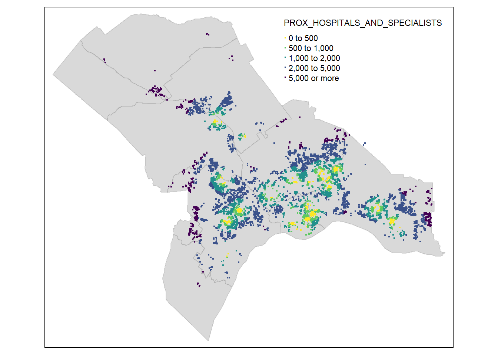

pacman::p_load(sf, tmap, tidyverse, tidygeocoder, matrixStats, units)Preliminary Analysis (EDA) for Housing Price in Johor Bahru
Geospatial Analytics
Reading the Data
Study Area (Admin Boundary Level 3)
study_area <- st_read(dsn = "data/geospatial/admin_boundaries",
layer = "geoBoundaries-MYS-ADM3") %>%
filter(shapeName %in% c(
"BANDAR JOHOR BAHRU", "MUKIM PLENTONG", "MUKIM PULAI",
"MUKIM TEBRAU", "MUKIM BUKIT BATU", "MUKIM KULAI",
"MUKIM SEDENAK", "MUKIM SENAI", "MUKIM JELUTONG",
"MUKIM TANJUNG KUPANG", "BANDAR KULAI"
)) %>% select(c(1,5,6)) %>%
st_set_crs(4326) %>% # Set the CRS to WGS84
st_transform(3377) %>% # Transform to Johor Bahru's appropriate CRS
st_zm()Reading layer `geoBoundaries-MYS-ADM3' from data source
`C:\hengkuanxin\SMU_Geospatial_Analytics\take-home-exercise\ex03\data\geospatial\admin_boundaries'
using driver `ESRI Shapefile'
Simple feature collection with 1859 features and 5 fields
Geometry type: MULTIPOLYGON
Dimension: XY
Bounding box: xmin: 98.93646 ymin: 0.8538234 xmax: 115.6782 ymax: 6.726112
Geodetic CRS: WGS 84Extract Study Area
After importing, I realise that several polygons are not located within the the supposedly Johor Bahru District, so we will split the polygons, and clean up wanted polygons.
# Split into individual polygons
study_area_split <- study_area %>%
filter(shapeName %in% c("MUKIM PULAI", "MUKIM JELUTONG")) %>%
st_cast("POLYGON")Warning in st_cast.sf(., "POLYGON"): repeating attributes for all
sub-geometries for which they may not be constant# Convert row names (fractional indices) to a new column for polygon IDs
study_area_split <- study_area_split %>%
mutate(polygon_id = row.names(study_area_split))
# Plot using tmap to visualize each polygon with its unique fractional index ID
tmap_mode("plot")tmap mode set to plottingtm_shape(study_area_split) +
tm_polygons("polygon_id") +
tm_text("polygon_id", size = 0.7, col = "black")
The map above shows multiple polygons outside of Johor Bahru, our study area. We will therefore identify the respective polygon.ids of polygons outside of our study area and remove them from our data set.
# Cleaning up unwanted data
study_area_split <- study_area_split %>%
# Remove unwanted polygons
filter(polygon_id %in% c(1,2)) %>% # polygon_id with values 1 or 2
# Remove the polygon_id column
select(-c("polygon_id"))
# Remove the row names
rownames(study_area_split) <- NULL
# Combine the modified areas back with the rest of the study area
study_area_cleaned <- study_area %>%
filter(!shapeName %in% c("MUKIM PULAI", "MUKIM JELUTONG")) %>%
bind_rows(study_area_split)After extracting the cleaned study area, we will export it to a file for future uses.
write_rds(study_area_cleaned, "data/rds/study_area.rds")Clear our temporary variables in our environment
rm(study_area, study_area_cleaned, study_area_split)Read back the exported file (for future runs).
study_area <- read_rds("data/rds/study_area.rds")Property Sales Data
property_data <- read_delim(
"data/aspatial/Open Transaction Data.csv",
delim = "\t",
locale = locale(encoding = "UTF-16") # Specify encoding
) %>% select(-c(9,11,12,14))New names:
Rows: 39120 Columns: 14
── Column specification
──────────────────────────────────────────────────────── Delimiter: "\t" chr
(12): Property Type, District, Mukim, Scheme Name/Area, Road Name, Month... num
(1): Land/Parcel Area lgl (1): ...14
ℹ Use `spec()` to retrieve the full column specification for this data. ℹ
Specify the column types or set `show_col_types = FALSE` to quiet this message.
• `` -> `...14`colnames(property_data) [1] "Property Type" "District"
[3] "Mukim" "Scheme Name/Area"
[5] "Road Name" "Month, Year of Transaction Date"
[7] "Tenure" "Land/Parcel Area"
[9] "Main Floor Area" "Transaction Price " # Relabelling Data Columns
property_data <- property_data %>%
# Step 1: Drop all rows with empty values
drop_na() %>%
# Step 2: Clean up Column Name Error
rename(
`Transaction Price` = `Transaction Price `,
) %>%
# Step 3: Convert 'Transaction Price' from string to numeric
mutate(
`Transaction Price` = `Transaction Price` %>%
gsub(pattern = "RM", replacement = "") %>% # Remove 'RM'
gsub(pattern = ",", replacement = "") %>% # Remove commas
as.numeric() # Convert to numeric
) %>%
# Step 4: Convert Main Floor Area from string to numeric
mutate(
`Main Floor Area` = `Main Floor Area` %>% as.numeric()
) %>%
# Step 5: Replace abbreviations and trim whitespace
mutate(
`Road Name` = str_replace_all(`Road Name`, "\\bJLN\\b", "Jalan"),
`Road Name` = str_replace_all(`Road Name`, "\\bTMN\\b", "Taman"),
`Scheme Name/Area` = str_replace_all(`Scheme Name/Area`, "\\bJLN\\b", "Jalan"),
`Scheme Name/Area` = str_replace_all(`Scheme Name/Area`, "\\bTMN\\b", "Taman")
) %>%
# Step 6: Trim whitespace from the specified columns
mutate(
`Road Name` = str_trim(`Road Name`),
`Scheme Name/Area` = str_trim(`Scheme Name/Area`),
`Mukim` = str_trim(`Mukim`),
`District` = str_trim(`District`)
) %>%
# Step 7: Select only 2023 Data Set
filter(grepl("2023", `Month, Year of Transaction Date`)) %>%
# Step 8: Calculate Price per Area
mutate(
`Price Per Floor Area` =
(`Transaction Price` / `Main Floor Area`) %>% round(.,digits=2)
) %>%
# Step 9: Create the address column
mutate(
address = paste0(`Road Name`, ', ', `Scheme Name/Area`, ', ', `Mukim`, ', ', `District`)
) %>%
# Step 10: Clean up the column names
rename(
`Transaction Price (RM)` = `Transaction Price`,
`Land/Parcel Area (SqM)` = `Land/Parcel Area`,
`Main Floor Area (SqM)` = `Main Floor Area`
) %>%
# Step 11: Ensure no null values during calculation and data type conversion
drop_na()Warning: There was 1 warning in `mutate()`.
ℹ In argument: `Main Floor Area = `Main Floor Area` %>% as.numeric()`.
Caused by warning in `` `Main Floor Area` %>% as.numeric() ``:
! NAs introduced by coercionrandom_sample <- sample_n(property_data, 100)
property_data_geocoded <- geocode_batch(random_sample)# # Function to geocode in batches with delays to avoid being blocked
# geocode_batch <- function(data, batch_size = 500) {
# results <- data.frame()
# for (i in seq(1, nrow(data), by = batch_size)) {
# batch <- data[i:min(i + batch_size - 1, nrow(data)), ]
# batch <- batch %>%
# geocode(
# address = `address`, # Column containing the address
# method = 'google', # Use Google Geocoding API
# api_key = google_api_key, # Provide your API key
# full_results = TRUE # Get full results (optional)
# )
# results <- bind_rows(results, batch)
# Sys.sleep(60) # wait 60 seconds between batches to avoid rate limits
# }
# return(results)
# }property_data <- read_rds("data/rds/property_preprocessed.rds") %>%
st_set_crs(4326) %>% # Set the CRS to WGS84
st_transform(3377) %>% # Transform to Johor Bahru's appropriate CRS
st_zm()Amenities Data (OpenStreetMap(OSM))
# Set the directory for the files
file_dir <- "data/geospatial/osm_extract2_combined/"
# List of amenities files to read
files <- c(
"border(border_control_facilities).geojson",
"border(coastlines).geojson",
"border(waterfronts_and_beaches).geojson",
"education(kindergartens).geojson",
"education(schools).geojson",
"education(universities_and_colleges).geojson",
"government_office(offices,townhalls).geojson",
"government_office(police_and_fire_stations).geojson",
"healthcare(hospitals_and_specialists).geojson",
"landuse(cemetery).geojson",
"landuse(commercial).geojson",
"landuse(industrial).geojson",
"recreation(parks_and_green_spaces).geojson",
"recreation(theme_parks_and_resorts).geojson",
"religion(buddhist_temples).geojson",
"religion(churches).geojson",
"religion(hindu_temples).geojson",
"religion(mosques).geojson",
# "religion(place_of_worship).geojson",
"retail_and_commercial(marketplace,malls).geojson",
"retail_and_commercial(restaurant, cafe, fast_food).geojson",
"retail_and_commercial(supermarket,convenience).geojson",
"transportation(airport).geojson",
"transportation(bus_stops).geojson",
"transportation(bus_terminals).geojson",
"transportation(carparks).geojson",
"transportation(petrol_stations).geojson"
)
# Read all files using lapply and store them in a list
amenities <- lapply(files, function(file) {
st_read(dsn = paste0(file_dir, file)) %>%
st_set_crs(4326) %>% # Set the CRS to WGS84
st_transform(3377) %>% # Transform to Johor Bahru's appropriate CRS
st_zm() %>% # Eliminate the z dimension
select(name, geometry) # Select relevant columns
})Reading layer `border(border_control_facilities)' from data source
`C:\hengkuanxin\SMU_Geospatial_Analytics\take-home-exercise\ex03\data\geospatial\osm_extract2_combined\border(border_control_facilities).geojson'
using driver `GeoJSON'
Simple feature collection with 124 features and 23 fields
Geometry type: POINT
Dimension: XY
Bounding box: xmin: 103.5983 ymin: 1.369875 xmax: 104.0889 ymax: 1.470338
Geodetic CRS: WGS 84
Reading layer `border(coastlines)' from data source
`C:\hengkuanxin\SMU_Geospatial_Analytics\take-home-exercise\ex03\data\geospatial\osm_extract2_combined\border(coastlines).geojson'
using driver `GeoJSON'
Simple feature collection with 66 features and 11 fields
Geometry type: GEOMETRY
Dimension: XY
Bounding box: xmin: 103.0614 ymin: 1.26569 xmax: 104.2966 ymax: 2.338451
Geodetic CRS: WGS 84
Reading layer `border(waterfronts_and_beaches)' from data source
`C:\hengkuanxin\SMU_Geospatial_Analytics\take-home-exercise\ex03\data\geospatial\osm_extract2_combined\border(waterfronts_and_beaches).geojson'
using driver `GeoJSON'
Simple feature collection with 19 features and 18 fields
Geometry type: GEOMETRY
Dimension: XY
Bounding box: xmin: 103.5753 ymin: 1.331212 xmax: 104.2959 ymax: 1.834221
Geodetic CRS: WGS 84
Reading layer `education(kindergartens)' from data source
`C:\hengkuanxin\SMU_Geospatial_Analytics\take-home-exercise\ex03\data\geospatial\osm_extract2_combined\education(kindergartens).geojson'
using driver `GeoJSON'
Simple feature collection with 53 features and 32 fields
Geometry type: GEOMETRY
Dimension: XY
Bounding box: xmin: 103.2043 ymin: 1.416967 xmax: 103.932 ymax: 1.767885
Geodetic CRS: WGS 84
Reading layer `education(schools)' from data source
`C:\hengkuanxin\SMU_Geospatial_Analytics\take-home-exercise\ex03\data\geospatial\osm_extract2_combined\education(schools).geojson'
using driver `GeoJSON'
Simple feature collection with 496 features and 76 fields
Geometry type: GEOMETRY
Dimension: XY
Bounding box: xmin: 103.2008 ymin: 1.302188 xmax: 104.2734 ymax: 2.01248
Geodetic CRS: WGS 84
Reading layer `education(universities_and_colleges)' from data source
`C:\hengkuanxin\SMU_Geospatial_Analytics\take-home-exercise\ex03\data\geospatial\osm_extract2_combined\education(universities_and_colleges).geojson'
using driver `GeoJSON'
Simple feature collection with 54 features and 50 fields
Geometry type: GEOMETRY
Dimension: XY
Bounding box: xmin: 103.3069 ymin: 1.427474 xmax: 104.2446 ymax: 1.731551
Geodetic CRS: WGS 84
Reading layer `government_office(offices,townhalls)' from data source
`C:\hengkuanxin\SMU_Geospatial_Analytics\take-home-exercise\ex03\data\geospatial\osm_extract2_combined\government_office(offices,townhalls).geojson'
using driver `GeoJSON'
Simple feature collection with 80 features and 50 fields
Geometry type: GEOMETRY
Dimension: XY
Bounding box: xmin: 103.2854 ymin: 1.32518 xmax: 104.2647 ymax: 1.929854
Geodetic CRS: WGS 84
Reading layer `government_office(police_and_fire_stations)' from data source
`C:\hengkuanxin\SMU_Geospatial_Analytics\take-home-exercise\ex03\data\geospatial\osm_extract2_combined\government_office(police_and_fire_stations).geojson'
using driver `GeoJSON'
Simple feature collection with 80 features and 35 fields
Geometry type: GEOMETRY
Dimension: XY
Bounding box: xmin: 103.2579 ymin: 1.349887 xmax: 104.2748 ymax: 1.924767
Geodetic CRS: WGS 84
Reading layer `healthcare(hospitals_and_specialists)' from data source
`C:\hengkuanxin\SMU_Geospatial_Analytics\take-home-exercise\ex03\data\geospatial\osm_extract2_combined\healthcare(hospitals_and_specialists).geojson'
using driver `GeoJSON'
Simple feature collection with 37 features and 41 fields
Geometry type: GEOMETRY
Dimension: XY
Bounding box: xmin: 103.3848 ymin: 1.424399 xmax: 104.2619 ymax: 1.736704
Geodetic CRS: WGS 84
Reading layer `landuse(cemetery)' from data source
`C:\hengkuanxin\SMU_Geospatial_Analytics\take-home-exercise\ex03\data\geospatial\osm_extract2_combined\landuse(cemetery).geojson'
using driver `GeoJSON'
Simple feature collection with 85 features and 22 fields
Geometry type: POLYGON
Dimension: XY
Bounding box: xmin: 103.1986 ymin: 1.325407 xmax: 104.2342 ymax: 1.794956
Geodetic CRS: WGS 84
Reading layer `landuse(commercial)' from data source
`C:\hengkuanxin\SMU_Geospatial_Analytics\take-home-exercise\ex03\data\geospatial\osm_extract2_combined\landuse(commercial).geojson'
using driver `GeoJSON'
Simple feature collection with 210 features and 47 fields
Geometry type: MULTIPOLYGON
Dimension: XY
Bounding box: xmin: 103.3986 ymin: 1.353603 xmax: 104.2754 ymax: 1.716962
Geodetic CRS: WGS 84
Reading layer `landuse(industrial)' from data source
`C:\hengkuanxin\SMU_Geospatial_Analytics\take-home-exercise\ex03\data\geospatial\osm_extract2_combined\landuse(industrial).geojson'
using driver `GeoJSON'
Simple feature collection with 332 features and 63 fields
Geometry type: MULTIPOLYGON
Dimension: XY
Bounding box: xmin: 103.1959 ymin: 1.323665 xmax: 104.2629 ymax: 2.018602
Geodetic CRS: WGS 84
Reading layer `recreation(parks_and_green_spaces)' from data source
`C:\hengkuanxin\SMU_Geospatial_Analytics\take-home-exercise\ex03\data\geospatial\osm_extract2_combined\recreation(parks_and_green_spaces).geojson'
using driver `GeoJSON'
Simple feature collection with 439 features and 40 fields
Geometry type: GEOMETRY
Dimension: XY
Bounding box: xmin: 103.3816 ymin: 1.334463 xmax: 104.2712 ymax: 1.873379
Geodetic CRS: WGS 84
Reading layer `recreation(theme_parks_and_resorts)' from data source
`C:\hengkuanxin\SMU_Geospatial_Analytics\take-home-exercise\ex03\data\geospatial\osm_extract2_combined\recreation(theme_parks_and_resorts).geojson'
using driver `GeoJSON'
Simple feature collection with 11 features and 33 fields
Geometry type: GEOMETRY
Dimension: XY
Bounding box: xmin: 103.623 ymin: 1.393741 xmax: 104.2669 ymax: 1.566893
Geodetic CRS: WGS 84
Reading layer `religion(buddhist_temples)' from data source
`C:\hengkuanxin\SMU_Geospatial_Analytics\take-home-exercise\ex03\data\geospatial\osm_extract2_combined\religion(buddhist_temples).geojson'
using driver `GeoJSON'
Simple feature collection with 38 features and 38 fields
Geometry type: GEOMETRY
Dimension: XY
Bounding box: xmin: 103.2607 ymin: 1.447801 xmax: 103.9489 ymax: 1.727159
Geodetic CRS: WGS 84
Reading layer `religion(churches)' from data source
`C:\hengkuanxin\SMU_Geospatial_Analytics\take-home-exercise\ex03\data\geospatial\osm_extract2_combined\religion(churches).geojson'
using driver `GeoJSON'
Simple feature collection with 34 features and 26 fields
Geometry type: GEOMETRY
Dimension: XY
Bounding box: xmin: 103.3865 ymin: 1.46241 xmax: 103.9053 ymax: 1.738215
Geodetic CRS: WGS 84
Reading layer `religion(hindu_temples)' from data source
`C:\hengkuanxin\SMU_Geospatial_Analytics\take-home-exercise\ex03\data\geospatial\osm_extract2_combined\religion(hindu_temples).geojson'
using driver `GeoJSON'
Simple feature collection with 29 features and 24 fields
Geometry type: GEOMETRY
Dimension: XY
Bounding box: xmin: 103.3846 ymin: 1.459071 xmax: 103.8952 ymax: 1.979058
Geodetic CRS: WGS 84
Reading layer `religion(mosques)' from data source
`C:\hengkuanxin\SMU_Geospatial_Analytics\take-home-exercise\ex03\data\geospatial\osm_extract2_combined\religion(mosques).geojson'
using driver `GeoJSON'
Simple feature collection with 395 features and 53 fields
Geometry type: GEOMETRY
Dimension: XY
Bounding box: xmin: 103.1986 ymin: 1.282514 xmax: 104.2749 ymax: 1.925831
Geodetic CRS: WGS 84
Reading layer `retail_and_commercial(marketplace,malls)' from data source
`C:\hengkuanxin\SMU_Geospatial_Analytics\take-home-exercise\ex03\data\geospatial\osm_extract2_combined\retail_and_commercial(marketplace,malls).geojson'
using driver `GeoJSON'
Simple feature collection with 74 features and 67 fields
Geometry type: GEOMETRY
Dimension: XY
Bounding box: xmin: 103.3186 ymin: 1.33639 xmax: 104.2256 ymax: 1.735003
Geodetic CRS: WGS 84
Reading layer `retail_and_commercial(restaurant, cafe, fast_food)' from data source `C:\hengkuanxin\SMU_Geospatial_Analytics\take-home-exercise\ex03\data\geospatial\osm_extract2_combined\retail_and_commercial(restaurant, cafe, fast_food).geojson'
using driver `GeoJSON'
Simple feature collection with 2171 features and 124 fields
Geometry type: GEOMETRY
Dimension: XY
Bounding box: xmin: 103.1998 ymin: 1.284156 xmax: 104.267 ymax: 2.012703
Geodetic CRS: WGS 84
Reading layer `retail_and_commercial(supermarket,convenience)' from data source
`C:\hengkuanxin\SMU_Geospatial_Analytics\take-home-exercise\ex03\data\geospatial\osm_extract2_combined\retail_and_commercial(supermarket,convenience).geojson'
using driver `GeoJSON'
Simple feature collection with 505 features and 74 fields
Geometry type: GEOMETRY
Dimension: XY
Bounding box: xmin: 103.248 ymin: 1.313601 xmax: 104.2344 ymax: 2.012832
Geodetic CRS: WGS 84
Reading layer `transportation(airport)' from data source
`C:\hengkuanxin\SMU_Geospatial_Analytics\take-home-exercise\ex03\data\geospatial\osm_extract2_combined\transportation(airport).geojson'
using driver `GeoJSON'
Simple feature collection with 2 features and 29 fields
Geometry type: GEOMETRY
Dimension: XY
Bounding box: xmin: 103.6603 ymin: 1.61922 xmax: 103.6783 ymax: 1.664477
Geodetic CRS: WGS 84
Reading layer `transportation(bus_stops)' from data source
`C:\hengkuanxin\SMU_Geospatial_Analytics\take-home-exercise\ex03\data\geospatial\osm_extract2_combined\transportation(bus_stops).geojson'
using driver `GeoJSON'
Simple feature collection with 1647 features and 45 fields
Geometry type: POINT
Dimension: XY
Bounding box: xmin: 103.2585 ymin: 1.300096 xmax: 104.2762 ymax: 1.928903
Geodetic CRS: WGS 84
Reading layer `transportation(bus_terminals)' from data source
`C:\hengkuanxin\SMU_Geospatial_Analytics\take-home-exercise\ex03\data\geospatial\osm_extract2_combined\transportation(bus_terminals).geojson'
using driver `GeoJSON'
Simple feature collection with 35 features and 45 fields
Geometry type: GEOMETRY
Dimension: XY
Bounding box: xmin: 103.2596 ymin: 1.32548 xmax: 104.2289 ymax: 1.729282
Geodetic CRS: WGS 84
Reading layer `transportation(carparks)' from data source
`C:\hengkuanxin\SMU_Geospatial_Analytics\take-home-exercise\ex03\data\geospatial\osm_extract2_combined\transportation(carparks).geojson'
using driver `GeoJSON'
Simple feature collection with 619 features and 72 fields
Geometry type: GEOMETRY
Dimension: XY
Bounding box: xmin: 103.2137 ymin: 1.268222 xmax: 104.2948 ymax: 1.850345
Geodetic CRS: WGS 84
Reading layer `transportation(petrol_stations)' from data source
`C:\hengkuanxin\SMU_Geospatial_Analytics\take-home-exercise\ex03\data\geospatial\osm_extract2_combined\transportation(petrol_stations).geojson'
using driver `GeoJSON'
Simple feature collection with 357 features and 63 fields
Geometry type: GEOMETRY
Dimension: XY
Bounding box: xmin: 103.2553 ymin: 1.340132 xmax: 104.2271 ymax: 1.877779
Geodetic CRS: WGS 84# Set names based on the amenity extracted from the file names
names(amenities) <- gsub(".*\\((.*)\\).*", "\\1", files)Data Cleaning
tmap_mode("view")tmap mode set to interactive viewingtm_shape(amenities$`border_control_facilities`) +
tm_dots()# Filter the customs_facilities data and replace the entry in amenity_data
amenities[["border_control_facilities"]] <- amenities[["border_control_facilities"]] %>%
filter(
str_detect(str_to_lower(name), str_to_lower("Sultan Abu Bakar")) |
str_detect(str_to_lower(name), str_to_lower("Johor Bahru"))
)
# Rename to amenity type to customs
names(amenities)[names(amenities) == "border_control_facilities"] <- "customs_facilities"proximity <- function(df1, df2, varname) {
dist_matrix <- st_distance(df1, df2) %>%
drop_units()
df1[,varname] <- rowMins(dist_matrix)
return(df1)
}# Calculate proximity for each amenity and add to property_data
for (amenity in names(amenities)) {
property_data <- proximity(property_data, amenities[[amenity]],
paste0("PROX_", toupper(amenity)))
}write_rds(property_data, "data/rds/proximity_matrix.rds")property_sales <- read_rds("data/rds/proximity_matrix.rds")
tmap_mode("plot")tmap mode set to plottingtm_shape(study_area) + tm_fill() + tm_borders(alpha=0.2) +
tm_shape(property_sales) + tm_dots("PROX_HOSPITALS_AND_SPECIALISTS",
breaks = c(0, 500, 1000, 2000, 5000, Inf),
palette="-viridis")